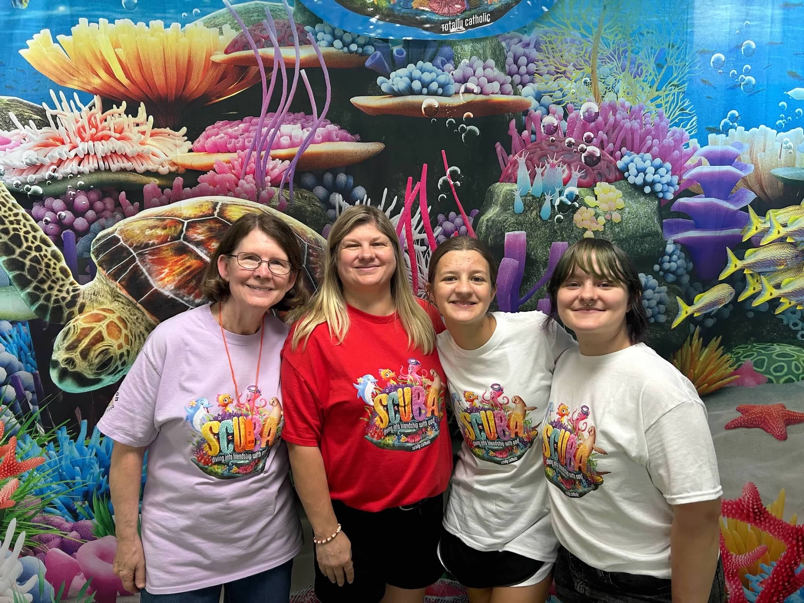
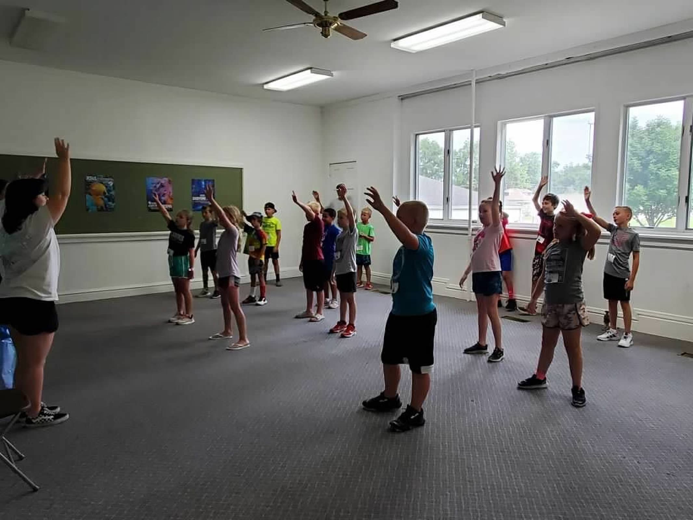
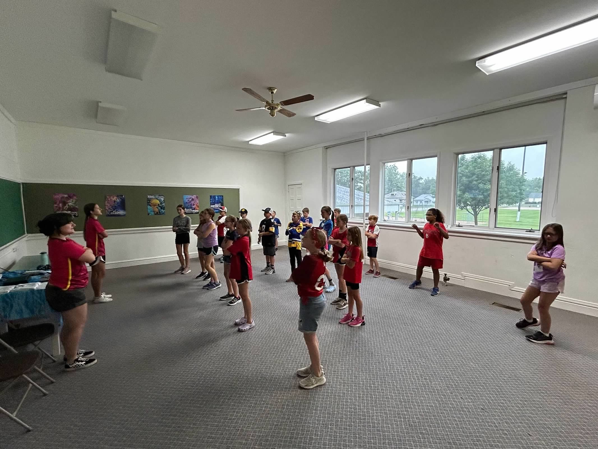

VBS
Every year, I volunteer to help at my hometown's VBS (Vacation Bible School). Last year, I taught the children
attending a few dances throughout the week, and on that Friday, we performed the dances for the children's
parents. Here are some photos from the last VBS I helped out at!



Gift Wrapping
For the past two Christmas, I joined my family in helping out my hometown's community by gift wrapping. These
gift are not just for anyone, but for less fortune families in the area who cannot afford to give gifts to their
kids or each other. This is one of my favorites to volunteer for as it really gives me holiday cheer.